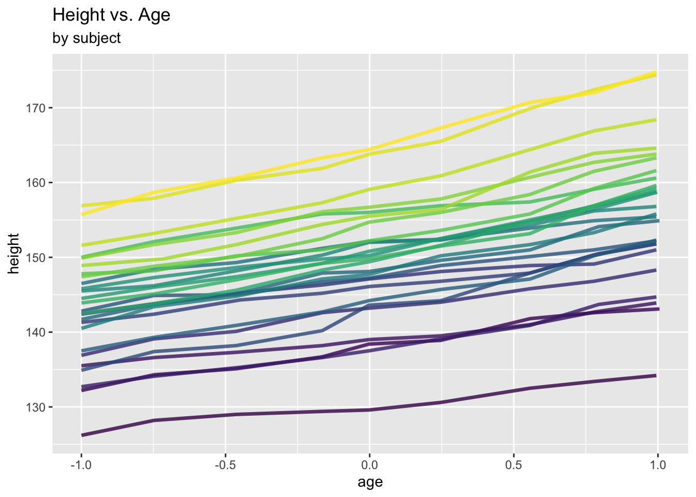
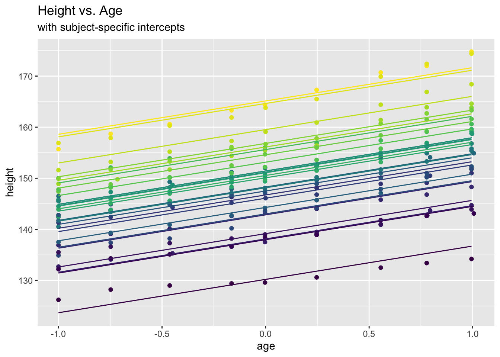
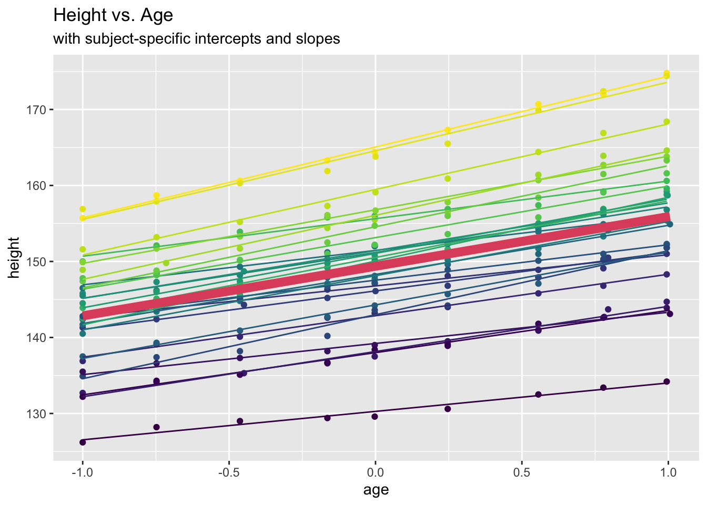
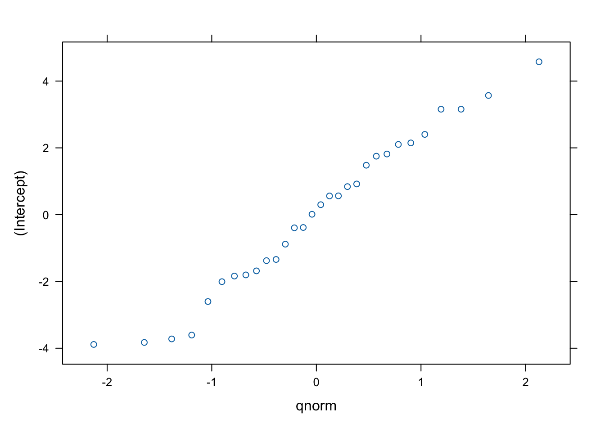
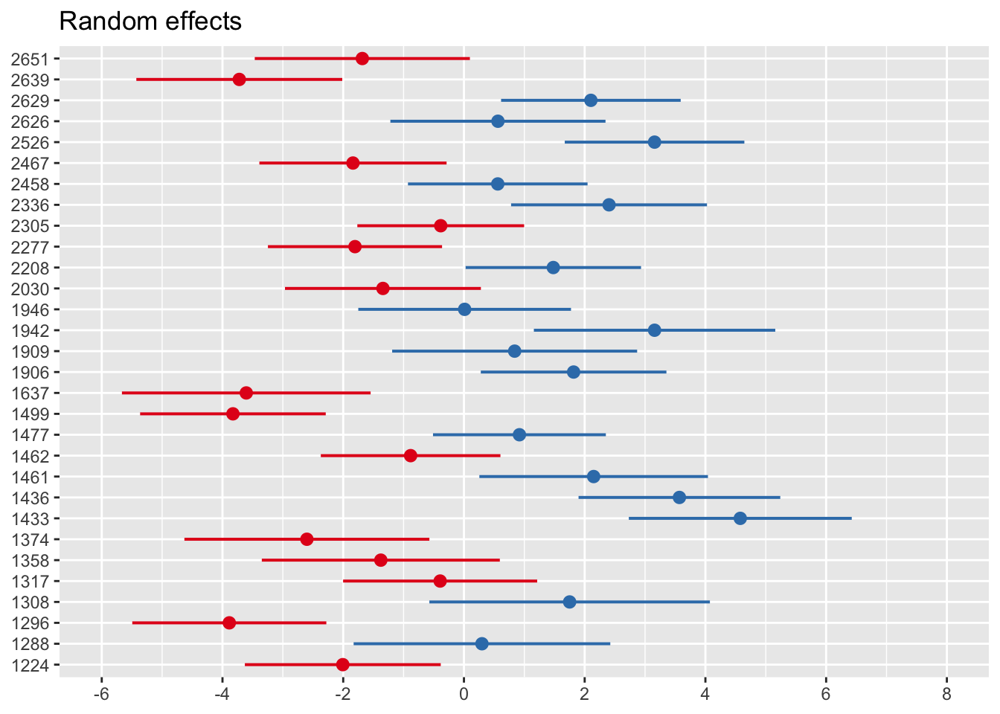
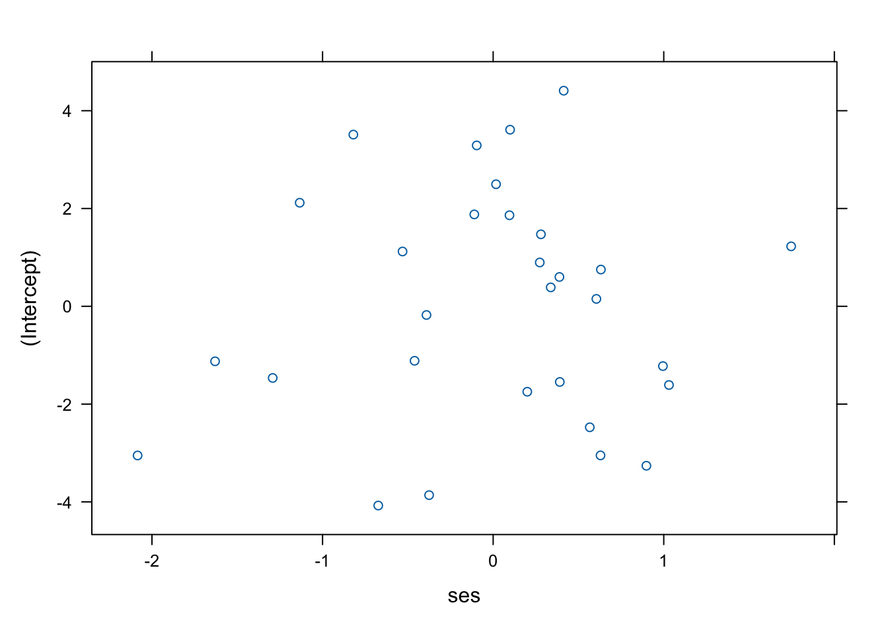
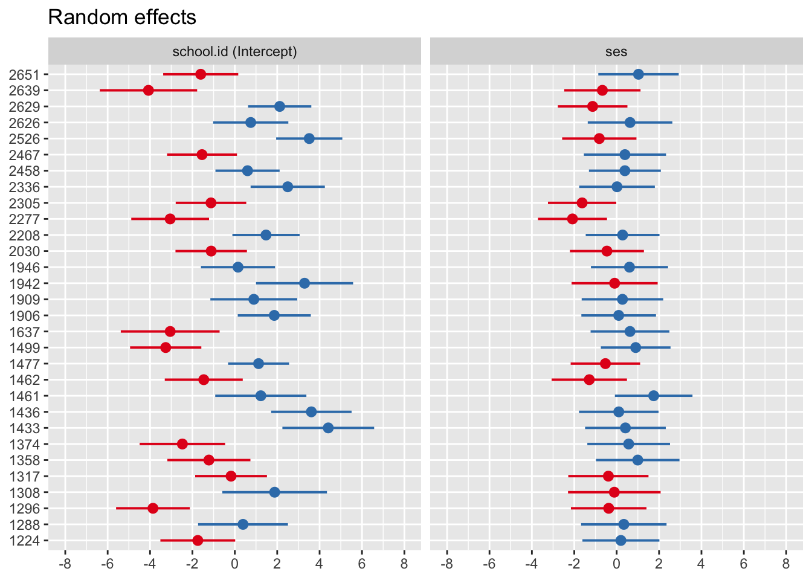

Chapter 7 Linear mixed models
7.1 Random intercept models
7.1.1 Example: Oxford boys data
We revisit the Oxford boys data from Section 6.1.1.
require(nlme)
require(ggplot2)
ggplot(data = Oxboys, aes(x = age, y = height, col = Subject)) +
geom_line(linewidth = 1.2, alpha = .8) +
labs(title = "Height vs. Age", subtitle="by subject") +
theme(legend.position = "none")
The growth of the boys appears to be governed by an (overall) linear trend with subject-specific intercepts. In this section, we are interested in modelling these subject-specific effects explicitly, not just the marginal, population-averaged effects as in the previous section.
In order to do this, one could consider the following modelling strategies:
- Option 1: Fit a traditional regression model into which we include as many levels as subjects.
## (Intercept) age Subject.L Subject.Q Subject.C Subject^4
## 149.3717351 6.5239272 38.2711944 -1.0176524 9.7862876 -0.2592347
## Subject^5 Subject^6 Subject^7 Subject^8 Subject^9 Subject^10
## 2.4811449 -1.7440210 -0.1519776 -0.8033613 0.0949727 -5.1229859
## Subject^11 Subject^12 Subject^13 Subject^14 Subject^15 Subject^16
## 1.4768831 -0.1076707 -1.4004605 1.5915615 -1.9752706 0.6604833
## Subject^17 Subject^18 Subject^19 Subject^20 Subject^21 Subject^22
## 1.3405697 2.0599463 1.7441624 -2.3586126 -1.3409881 1.3729270
## Subject^23 Subject^24 Subject^25
## 3.4359538 1.1353750 -1.8758449oxboys.int.pred <- predict(oxboys.int.lm)
ggplot(data = Oxboys, aes(x = age, y = height)) +
geom_point(aes(col=Subject)) +
geom_line(aes(y=oxboys.int.pred, col=Subject)) +
labs(title = "Height vs. Age", subtitle="with subject-specific intercepts") +
theme(legend.position = "none")
While this seems to fit well, the approach does not appear very practicable, for two reasons: Firstly, one potentially needs very many parameters (one for each subject/cluster \(i=1, \ldots,n\)). Secondly, the approach is useless for prediction of a new subject (since the intercept of that new subject will be unknown)
- Option 2: Consider the subject-specific intercepts to be drawn from a distribution centered at the overall intercept. This view implies a “hierarchical” model. One also speaks of a “two-level model” (or more generally multilevel models), where however this notion of levels has nothing to do with the notion of levels of a factor! Specifically, one has:
Lower level (observations/repeated measurements): \[ y_{ij}= a_i+ \beta x_{ij}+ \epsilon_{ij} \,\,\mbox{ with } \epsilon_{ij} \sim \mathcal{N}(0, \sigma^2) \]
Upper level (clusters/subjects): \[ a_i= \alpha + u_i \,\,\mbox{ with } u_{i} \sim \mathcal{N}(0, \sigma_u^2) \] where all “random effects” \(u_i\) and model errors \(\epsilon_{ij}\) are independent.
In the above, \(\alpha\) and \(\beta\) indicate fixed effect parameters, while \(u_i\) and \(\epsilon_{ij}\) are random quantities.
Random effect model with subjects-specific random intercepts and a single covariate \(x_{ij}=\texttt{age}_{ij}\):
## Loading required package: lme4## Loading required package: Matrix##
## Attaching package: 'Matrix'## The following object is masked from 'package:npmlreg':
##
## expand##
## Attaching package: 'lme4'## The following object is masked from 'package:nlme':
##
## lmList## Linear mixed model fit by REML ['lmerMod']
## Formula: height ~ age + (1 | Subject)
## Data: Oxboys
## REML criterion at convergence: 940.0297
## Random effects:
## Groups Name Std.Dev.
## Subject (Intercept) 8.097
## Residual 1.311
## Number of obs: 234, groups: Subject, 26
## Fixed Effects:
## (Intercept) age
## 149.372 6.524oxboys.lmm.pred <- predict(oxboys.lmm) # predict xi^T beta + zi_T u_i
# will study later how u_i are predicted!
oxboys.lmm.marg <- predict(oxboys.lmm, re.form=NA) # predict xi^T beta
# corresponds to predicting the marginal model fit
ggplot(data = Oxboys, aes(x = age, y = height)) +
geom_point(aes(col=Subject)) +
geom_line(aes(y=oxboys.lmm.pred, col=Subject)) +
geom_line(aes(y=oxboys.lmm.marg), lwd=3, colour=2) +
labs(title = "Height vs. Age", subtitle="with subject-specific intercepts")+
theme(legend.position = "none")
Note that we can combine the two-level representation of the model displayed above into a single model (we also slightly generalize the notation here to allow for more than one covariates):
\[ \begin{aligned} y_{ij} &= \alpha + \boldsymbol{\beta}^T\boldsymbol{x}_{ij}+ u_i + \epsilon_{ij}\\ &= \alpha+ u_i + \boldsymbol{\beta}^T\boldsymbol{x}_{ij}+ \epsilon_{ij} \end{aligned} \] where the first representation is useful as it highlights the separation of the model into a “fixed part” (first two terms) and a “random part” (last two terms), and the second representation is useful because it highlights its role as a random intercept model.
Also, it is interesting to look at the implied marginal effects of this model. Specifically, the marginal means are \[ E(y_{ij}) = \alpha + \boldsymbol{\beta}^T \boldsymbol{x}_{ij} \] and the marginal variances are
\[ \mbox{Var}(y_{ij}) = \sigma_u^2 + \sigma^2. \] We see that
- fixed effects specify the marginal mean;
- random effects specify the marginal variance.
Since models of the type above contain a mixture of fixed effect parameters and random effects, they are also often termed “mixed effect models”.
What can we say about marginal covariances?
\[ \begin{aligned} \mbox{Cov}(y_{ij}, y_{ik})&= E\left((y_{ij}-E(y_{ij}))(y_{ik}-E(y_{ik}))\right)\\ &= E\left((u_i+\epsilon_{ij})(u_i+\epsilon_{ik})\right)\\ &= E(u_i^2)+ E(u_i)E(\epsilon_{ij})+E(u_i)E(\epsilon_{ik})+E(\epsilon_{ij})E(\epsilon_{ik})\\ &= \sigma_u^2 \end{aligned} \]
This implies also
\[ \mbox{Corr}(y_{ij}, y_{ik})= \frac{\sigma_u^2}{\sigma_u^2+\sigma^2} \]
This quantity is commonly known as the intra-class correlation (ICC). It can be interpreted as the proportion of “total” variation explained by the cluster structure. Alternatively it can be interpreted as the correlation of two items randomly drawn from the same cluster.
In this context, one can show easily that \[ \mbox{Corr}(y_{ij}, y_{i^{\prime}k})=0 \,\, \mbox{ for } i \not= i^{\prime} \] that is, observations from different clusters are uncorrelated.
It is clear from the equations above that covariates have not played a role in this derivation. In fact, it is common to compute the ICC for a model which does not contain any fixed-effect parameters at all, i.e. \(\boldsymbol{\beta}\equiv 0\). However, while the equation for ICC is then unchanged, the estimates of \(\sigma^2\) and \(\sigma_u^2\) may still be different for the “empty random intercept” model \(y_{ij}=\alpha+u_i+\epsilon_{ij}\) and the “random intercept model with fixed effect covariates”. In the literature, ICCs which are based on the empty model (without fixed effect covariates) are sometimes called unconditional ICC, and the ones including fixed effects “conditional ICC”, with terminology not being entirely consistent across resources.
ICCs are often the “first shot” when assessing whether or not a repeated measure structure needs to be explicitly addressed through a (say) two-level model.
7.1.2 Example: Oxford boys data
We compute the intra-class correlation for this data set; firstly “conditional”:
## Linear mixed model fit by REML ['lmerMod']
## Formula: height ~ age + (1 | Subject)
## Data: Oxboys
## REML criterion at convergence: 940.0297
## Random effects:
## Groups Name Std.Dev.
## Subject (Intercept) 8.097
## Residual 1.311
## Number of obs: 234, groups: Subject, 26
## Fixed Effects:
## (Intercept) age
## 149.372 6.524## grp var1 var2 vcov sdcor
## 1 Subject (Intercept) <NA> 65.554956 8.096602
## 2 Residual <NA> <NA> 1.718066 1.310750## [1] 0.9744613Then “unconditional”:
## Linear mixed model fit by REML ['lmerMod']
## Formula: height ~ (1 | Subject)
## Data: Oxboys
## REML criterion at convergence: 1466.59
## Random effects:
## Groups Name Std.Dev.
## Subject (Intercept) 7.957
## Residual 4.661
## Number of obs: 234, groups: Subject, 26
## Fixed Effects:
## (Intercept)
## 149.5oxboys.int_only.v <- as.data.frame(summary(oxboys.int_only.lmm)$varcor)
icc <- oxboys.int_only.v[1,4]/(oxboys.int_only.v[1,4]+oxboys.int_only.v[2,4])
icc## [1] 0.7445153Automated (confusing output!):
## Loading required package: performance## # Intraclass Correlation Coefficient
##
## Adjusted ICC: 0.974
## Unadjusted ICC: 0.770## # Intraclass Correlation Coefficient
##
## Adjusted ICC: 0.745
## Unadjusted ICC: 0.7457.2 Random slope models
What if not only the intercept, but also the slopes subject-specific?
For ease of presentation, let us now just consider a single covariate \(x_{ij}\). In this case, we have
- lower level: \[ y_{ij}= a_i+b_i x_{ij}+\epsilon_{ij} \]
- upper level: \[ \begin{aligned} a_i &= \alpha + u_i \\ b_i &= \beta + v_i \end{aligned} \] where \(\epsilon_{ij} \sim \mathcal{N}(0,\sigma^2)\), \(u_i \sim \mathcal{N}(0, \sigma^2_u)\), \(v_i \sim \mathcal{N}(0,\sigma^2_v)\), and \(\epsilon_{ij}\) is independent with \(u_i\) and \(v_i\). However, \(u_i\) and \(v_i\) for the same cluster may not be independent.
Combined this gives
\[ y_{ij}= \alpha+\beta x_{ij}+ u_i+v_ix_{ij}+\epsilon_{ij} \] where \(\alpha+\beta x_{ij}\) is the fixed part and \(u_i+v_ix_{ij}+\epsilon_{ij}\) is the random part of the model.
Marginally this implies \[ \begin{aligned} E(y_{ij}) &= \alpha+\beta x_{ij}\\ \mbox{Var}(y_{ij}) &= \sigma^2+ \sigma_u^2+\sigma_v^2x_{ij}^2+2r\sigma_u\sigma_vx_{ij} \end{aligned} \] where we define \(r=\mbox{Corr}(u_j,v_j)\), which is sometimes assumed to be 0 [Dobson and Barnett (2018); page 221].
7.2.1 Example: Oxford boys data
require(lme4)
oxboys.slope.lmm <- lmer(height ~ age + (age | Subject), data=Oxboys)
oxboys.slope.lmm## Linear mixed model fit by REML ['lmerMod']
## Formula: height ~ age + (age | Subject)
## Data: Oxboys
## REML criterion at convergence: 724.091
## Random effects:
## Groups Name Std.Dev. Corr
## Subject (Intercept) 8.0811
## age 1.6807 0.64
## Residual 0.6599
## Number of obs: 234, groups: Subject, 26
## Fixed Effects:
## (Intercept) age
## 149.372 6.525oxboys.slope.lmm.pred <- predict(oxboys.slope.lmm)
oxboys.slope.lmm.marg <- predict(oxboys.slope.lmm, re.form=NA)So, here \(r=0.64\).
ggplot(data = Oxboys, aes(x = age, y = height)) +
geom_point(aes(col=Subject)) +
geom_line(aes(y=oxboys.slope.lmm.pred, col=Subject)) +
geom_line(aes(y=oxboys.slope.lmm.marg), lwd=3, colour=2) +
labs(title = "Height vs. Age", subtitle="with subject-specific intercepts and slopes") +
theme(legend.position = "none")
7.3 The linear mixed model (LMM)
General framework encompassing all previous models (but still only Gaussian response):
\[ \boldsymbol{Y}=\boldsymbol{X}\boldsymbol{\beta}+\boldsymbol{Z}\boldsymbol{u}+\boldsymbol{\epsilon} \]
where we have
\[ \begin{aligned} \boldsymbol{Y}= (y_{11}, \ldots, y_{1n_1}, y_{21}, \ldots, y_{2n_2}, \ldots, y_{n1}, \ldots, y_{nn_n})^T \in \mathbb{R}^N\\ \boldsymbol{\epsilon}= (\epsilon_{11}, \ldots, \epsilon_{1n_1}, \epsilon_{21}, \ldots, \epsilon_{2n_2}, \ldots, \epsilon_{n1}, \ldots, \epsilon_{nn_n})^T \in \mathbb{R}^N \end{aligned} \]
where we we recall that \(N=\sum_{i=1}^n n_i\), and
- \(p\) fixed effects; i.e. \(\boldsymbol{\beta} \in \mathbb{R}^p\), with design matrix \(\boldsymbol{X} \in \mathbb{R}^{N \times p}\);
- \(q\) random effects, i.e. \(\boldsymbol{u}= (\tilde{\boldsymbol{u}}_1, \ldots,\tilde{\boldsymbol{u}}_n )^T\) with \(\tilde{\boldsymbol{u}}_1 \in \mathbb{R}^q\), and random-efffects design matrix \(\boldsymbol{Z} \in \mathbb{R}^{N \times nq}\).
7.3.1 Examples
- For the “empty model” with random intercept,
\[ y_{ij} = \alpha+u_i+\epsilon_{ij}, \]
one has \[ \begin{aligned} \boldsymbol\beta &= \alpha \in \mathbb{R}, \\ \boldsymbol{u} &= (u_1, \ldots, u_n)^T \in \mathbb{R}^n, \\ \boldsymbol{X} &= (1, \ldots, 1)^T \in \mathbb{R}^N, \\ \end{aligned} \]
as well as \[ \boldsymbol{Z} = \left(\begin{array}{ccc} 1 & & \\ \vdots & & \\ 1 & & \\ & \ddots & \\ & & 1 \\ & & \vdots \\ & & 1 \\ \end{array}\right) \in \mathbb{R}^{N \times n}. \]
- For the random intercept model with fixed slope and one covariate,
\[ y_{ij}= \alpha + \beta x_{ij} + u_i + \epsilon_{ij}, \] one has
\[ \begin{aligned} \boldsymbol\beta &= \left(\begin{array}{c} \alpha \\ \beta \end{array}\right) \in \mathbb{R}^2,\\ \boldsymbol{u} &= (u_1, \ldots, u_n)^T \in \mathbb{R}^n, \\ \boldsymbol{X} &= \left(\begin{array}{cc} 1 & x_{11} \\ \vdots & \vdots \\ 1 & x_{n n_n} \\ \end{array}\right) \in \mathbb{R}^{N \times 2} \end{aligned} \]
and \(\boldsymbol{Z}\) as above.
- For the random slope model with a single covariate,
\[ y_{ij}= \alpha + \beta x_{ij} + u_i + v_i x_{ij} + \epsilon_{ij}, \] one has
\[ \begin{aligned} \boldsymbol\beta &= \left(\begin{array}{c} \alpha \\ \beta \end{array}\right) \in \mathbb{R}^2,\\ \boldsymbol{u} &= (u_1, v_1, \ldots, u_n, v_n)^T \in \mathbb{R}^{2n}, \\ \end{aligned} \] \(\boldsymbol{X}\) as above, and
\[ \boldsymbol{Z} = \left(\begin{array}{ccccc} 1 & x_{11} & & & \\ \vdots & \vdots & & & \\ 1 & x_{1n_1} & & & \\ & & \ddots & & \\ & & & 1 & x_{n1} \\ & & & \vdots & \vdots \\ & & & 1 & x_{n n_n} \end{array}\right) \mathbb{R}^{N \times 2n}. \]
In the LMM, one (commonly) assumes:
\[ \boldsymbol{\epsilon} \sim \mathcal{N}(0, \sigma^2\boldsymbol{I}_N) \] (this is because correlation structures have already been induced by the random effect, hence there will be rarely a reason to make further specifications of such correlations) and \[ \boldsymbol{u}\sim \mathcal{N}(0, \boldsymbol{Q}) \] where \(\boldsymbol{\epsilon}\) and \(\boldsymbol{u}\) are independent, and \[ \boldsymbol{Q}= \mbox{Var}(\boldsymbol{u})= \left( \begin{array}{ccc} \mbox{Var}(\tilde{\boldsymbol{u}}_1) & & \\ & \ddots & \\ & & \mbox{Var}(\tilde{\boldsymbol{u}}_n) \end{array} \right)= \left( \begin{array}{ccc} \tilde{\boldsymbol{Q}} & & \\ & \ddots & \\ & & \tilde{\boldsymbol{Q}} \end{array} \right) \] That is, the \(\tilde{\boldsymbol{Q}}\) is the variance matrix of the random effects of the \(i\)th cluster (which usually does not depend on \(i\)).
This implies marginally
\[ \begin{aligned} E(\boldsymbol{Y}) &= \boldsymbol{X}\boldsymbol{\beta}+\boldsymbol{Z}E(\boldsymbol{u})+E(\boldsymbol{\epsilon})= \boldsymbol{X}\boldsymbol{\beta}\\ \mbox{Var}(\boldsymbol{Y}) &= \boldsymbol{Z} \, \mbox{Var}(\boldsymbol{u}) \, \boldsymbol{Z}^T+\sigma^2\boldsymbol{I}_N = \boldsymbol{Z}\boldsymbol{Q} \boldsymbol{Z}^T+\sigma^2\boldsymbol{I}_N \end{aligned} \]
Summarizing, this gives us the “structured” marginal variance matrix
\[ \boldsymbol{\Sigma} = \mbox{Var}(\boldsymbol{Y})= \boldsymbol{Z}\boldsymbol{Q}\boldsymbol{Z}^T+ \sigma^2\boldsymbol{I}_N. \]
7.4 Estimation of fixed effects
Recall our modelling framework:
\[ \begin{aligned} \boldsymbol{u} &\sim \mathcal{N}(0, \boldsymbol{Q}),\\ \boldsymbol{Y}|\boldsymbol{u} &\sim \mathcal{N}(\boldsymbol{X}\boldsymbol{\beta} + \boldsymbol{Z}\boldsymbol{u}, \sigma^2\boldsymbol{I}_N),\\ \boldsymbol{Y} &\sim \mathcal{N}(\boldsymbol{X}\boldsymbol{\beta}, \boldsymbol{Z}\boldsymbol{Q}\boldsymbol{Z}^T + \sigma^2\boldsymbol{I}_N). \end{aligned} \] Denote the set of variance parameters (“variance components”) by \(\boldsymbol{\gamma}= \{\boldsymbol{Q}, \sigma^2\}\). Then \(\boldsymbol{\Sigma}=\boldsymbol{\Sigma}(\boldsymbol{\gamma})\); i.e. \(\boldsymbol{\Sigma}\) is only fully known when \(\boldsymbol{\gamma}\) is known.
For the estimation of the fixed effect parameters \(\boldsymbol{\beta}\), we distinguish several cases:
- \(\boldsymbol{\gamma}\) known (hence \(\boldsymbol{\Sigma}\) known). Then the solution is the same as for the marginal model with fixed \(\boldsymbol{\Sigma}\), i.e. \[ \hat{\boldsymbol{\beta}}=(\boldsymbol{X}^T\boldsymbol{\Sigma}^{-1}\boldsymbol{X})^{-1}\boldsymbol{X}^T\boldsymbol{\Sigma}^{-1}\boldsymbol{Y} \] Note that this is just the solution corresponding to the GEE \(\boldsymbol{X}^T\boldsymbol{\Sigma}^{-1}(\boldsymbol{Y}-\boldsymbol{\mu})=0\) with known (and correctly specified) variance matrix \(\boldsymbol{\Sigma}\) (noting that in the current context we have \(\boldsymbol{D}=\boldsymbol{I}\) since our setup is fully Gaussian, without link functions).
- If \(\boldsymbol{\gamma}\) is unknown, a possible approach is to estimate it through maximization of the (marginal) likelihood
\[ L^*(\boldsymbol{\beta}, \boldsymbol{\gamma}) \propto \frac{1}{|\boldsymbol{\Sigma}|^{1/2}}\exp\left(-\frac{1}{2}(\boldsymbol{Y}-\boldsymbol{X}\boldsymbol{\beta})^T\boldsymbol{\Sigma}^{-1}(\boldsymbol{\gamma})(\boldsymbol{Y}-\boldsymbol{X}\boldsymbol{\beta})\right) \] In order to maximize this likelihood, one typically employs a profile-likelihood-type approach. Consider therefore the same estimator as in case 1 above, but evaluated at \(\boldsymbol{\gamma}\), i.e. \[ \hat{\boldsymbol{\beta}}(\boldsymbol{\gamma})=(\boldsymbol{X}^T\boldsymbol{\Sigma}^{-1}(\boldsymbol{\gamma})\boldsymbol{X})^{-1}\boldsymbol{X}^T\boldsymbol{\Sigma}^{-1}(\boldsymbol{\gamma})\boldsymbol{Y} \] which can be plugged into \(L^*(\boldsymbol{\beta}, \boldsymbol{\gamma})\), yielding \[ L(\boldsymbol{\gamma})= L^*(\hat{\boldsymbol{\beta}}(\boldsymbol{\gamma}),\boldsymbol{\gamma} ) \] Maximizing \(L(\boldsymbol{\gamma})\) w.r.t. \(\boldsymbol{\gamma}\) yields
\[ \hat{\boldsymbol{\gamma}}_{ML} = \mbox{arg max}_{\boldsymbol{\gamma}}L(\boldsymbol{\gamma}). \]
- REML estimation addresses the following problem in the ML solution: Just like, in the linear model (LM), the Maximum Likelihood estimate of the error variance \(\sigma^2\) is biased, in the LMM the estimator \(\hat{\boldsymbol{\gamma}}_{ML}\) is biased for \(\boldsymbol{\gamma}\), due to a “loss” of degrees of freedom in the estimation of \(\boldsymbol{\beta}\). The idea of REML (Restricted Maximum Likelihood estimation) is to multiply the model equation \(\boldsymbol{Y}=\boldsymbol{X}\boldsymbol{\beta}+\boldsymbol{Z}\boldsymbol{u}+\boldsymbol{\epsilon}\) by any matrix \(\boldsymbol{A}\) which is orthogonal to \(\boldsymbol{X}\), i.e. \(\boldsymbol{A}^T\boldsymbol{X}=0\), then
\[
\boldsymbol{A}^T\boldsymbol{Y}= \boldsymbol{A}^T\boldsymbol{Z}\boldsymbol{u}+ \boldsymbol{A}^T\boldsymbol{\epsilon}
\]
and based on this one can find a likelihood (of \(\boldsymbol{A}^T\boldsymbol{Y}\)) which does not depend on \(\boldsymbol{\beta}\) [Fahrmeir and Tutz (2001); page 290/291]. This “restricted likelihood” (the logarithm of which is called REML criterion in
lmeroutput) does not depend on \(\boldsymbol{A}\) and takes the shape \[ L_{REML}(\boldsymbol{\gamma}) \propto|\boldsymbol{X}^T\boldsymbol{\Sigma}^{-1}(\boldsymbol{\gamma})\boldsymbol{X}|^{-1/2}L(\boldsymbol{\gamma}) \] Then the REML estimator of \(\boldsymbol\gamma\) is
\[ \hat{\boldsymbol{\gamma}}_{REML}= \mbox{arg max}_{\boldsymbol{\gamma}}L_{REML}(\boldsymbol{\gamma}). \]
7.4.1 Examples
REML and ML estimates for Oxford boys data
## Linear mixed model fit by REML ['lmerMod']
## Formula: height ~ age + (age | Subject)
## Data: Oxboys
## REML criterion at convergence: 724.091
## Random effects:
## Groups Name Std.Dev. Corr
## Subject (Intercept) 8.0811
## age 1.6807 0.64
## Residual 0.6599
## Number of obs: 234, groups: Subject, 26
## Fixed Effects:
## (Intercept) age
## 149.372 6.525oxboys.slope.lmm.ml <- lmer(height ~ age + (age | Subject), data=Oxboys, REML=FALSE)
oxboys.slope.lmm.ml## Linear mixed model fit by maximum likelihood ['lmerMod']
## Formula: height ~ age + (age | Subject)
## Data: Oxboys
## AIC BIC logLik deviance df.resid
## 737.9677 758.6996 -362.9838 725.9677 228
## Random effects:
## Groups Name Std.Dev. Corr
## Subject (Intercept) 7.9240
## age 1.6467 0.64
## Residual 0.6599
## Number of obs: 234, groups: Subject, 26
## Fixed Effects:
## (Intercept) age
## 149.372 6.525REML and ML estimates for mathematics achievement data
load("Datasets/sub_hsb.RData")
school.id <- as.factor(sub_hsb$schid)
hsb.lmm <- lmer(mathach~ses + (1|school.id), data=sub_hsb)
hsb.lmm## Linear mixed model fit by REML ['lmerMod']
## Formula: mathach ~ ses + (1 | school.id)
## Data: sub_hsb
## REML criterion at convergence: 8601.028
## Random effects:
## Groups Name Std.Dev.
## school.id (Intercept) 2.518
## Residual 6.010
## Number of obs: 1329, groups: school.id, 30
## Fixed Effects:
## (Intercept) ses
## 12.89 2.12## Linear mixed model fit by maximum likelihood ['lmerMod']
## Formula: mathach ~ ses + (1 | school.id)
## Data: sub_hsb
## AIC BIC logLik deviance df.resid
## 8608.516 8629.284 -4300.258 8600.516 1325
## Random effects:
## Groups Name Std.Dev.
## school.id (Intercept) 2.462
## Residual 6.008
## Number of obs: 1329, groups: school.id, 30
## Fixed Effects:
## (Intercept) ses
## 12.886 2.1317.5 Inference for fixed effects
Recall that, for known \(\boldsymbol{\Sigma} = \boldsymbol{Z}\boldsymbol{Q}\boldsymbol{Z}^T+ \sigma^2\boldsymbol{I}_N\), one has
\[ \hat{\boldsymbol{\beta}}(\boldsymbol{\gamma})=(\boldsymbol{X}^T\boldsymbol{\Sigma}^{-1}\boldsymbol{X})^{-1}\boldsymbol{X}^T\boldsymbol{\Sigma}^{-1}\boldsymbol{Y} \] which means that
\[ \begin{aligned} \mbox{Var}(\hat{\boldsymbol{\beta}})&= (\boldsymbol{X}^T\boldsymbol{\Sigma}^{-1}\boldsymbol{X})^{-1}\boldsymbol{X}^T\boldsymbol{\Sigma}^{-1}\mbox{Var}(\boldsymbol{Y})\boldsymbol{\Sigma}^{-1}\boldsymbol{X}(\boldsymbol{X}^T\boldsymbol{\Sigma}^{-1}\boldsymbol{X})^{-1}\\ &= (\boldsymbol{X}^T\boldsymbol{\Sigma}^{-1}\boldsymbol{X})^{-1} \end{aligned} \]
However, if \(\boldsymbol{\Sigma}= \boldsymbol{\Sigma}(\boldsymbol{\gamma})\) needs to be estimated by \(\hat{\boldsymbol{\Sigma}}= \boldsymbol{\Sigma}(\hat{\boldsymbol{\gamma}})\), this variance estimator can be poor. Therefore, it has been suggested in the literature to also use the sandwich variance estimator (as we have seen for GEEs in Section 6.3) here. However, R function lmer does not actually do this. The LMM implementation in SAS does.
Asymptotic normality and unbiasedness of the \(\hat{\boldsymbol{\beta}}\) hold approximately. So, for some fixed effects coefficient \(\beta_j\), \(j=1, \ldots, p\),
- p-values for \(H_0: \beta_j=0\) can be approximately based on t-values \(\hat{\beta}_j/SE(\hat{\beta}_j)\);
- \(\hat{\beta}_j \pm z_{\alpha/2} SE(\hat{\beta}_j)\) will give reasonable confidence intervals,
where \(z_{\alpha/2}\) is the right-hand tail \(\alpha/2\) quantile of the standard normal distribution.
7.5.1 Example: Mathematics achievement data
We consider the random intercept model for mathematics achievement with fixed effect for socioeconomic status (SES) as fitted in Section 7.4.1:
## Linear mixed model fit by REML ['lmerMod']
## Formula: mathach ~ ses + (1 | school.id)
## Data: sub_hsb
##
## REML criterion at convergence: 8601
##
## Scaled residuals:
## Min 1Q Median 3Q Max
## -2.81268 -0.70959 -0.03616 0.76678 2.74101
##
## Random effects:
## Groups Name Variance Std.Dev.
## school.id (Intercept) 6.339 2.518
## Residual 36.119 6.010
## Number of obs: 1329, groups: school.id, 30
##
## Fixed effects:
## Estimate Std. Error t value
## (Intercept) 12.8865 0.4908 26.256
## ses 2.1202 0.2536 8.359
##
## Correlation of Fixed Effects:
## (Intr)
## ses -0.010The t-value for the fixed effect slope ses is given by \(2.1202/0.2536=8.359\), which is clearly \(\gg 2\) and hence significantly different from 0 at the \(5\%\) (or any other reasonable) level of significance.
We can easily obtain an approximate 95% confidence interval for the fixed effect coefficient ses:
## [1] 1.623153 2.617247However, as stated the methods mentioned above have only approximate character. A more principled approach is to use likelihood ratio (LR)– based methods.
Therefore, assume there is a smaller model \(M_0\) and a larger model \(M_1\), in the sense that the smaller model is nested in the larger model \(M_1\), but with the only difference being in the fixed effects. Let us further denote the likelihoods (of the fitted models, evaluated at the respective MLEs) by \(L_0\) and \(L_1\) respectively, so that clearly \(L_0<L_1\). Finally, let \(D_i=-2\log L_i+c\), with \(c\) denoting a constant depending on the saturated likelihood. Then
\[ D_0-D_1= -2 \log L_0 + 2\log L_1 = -2 \log \frac{L_0}{L_1} \sim \chi^2(df) \] where \(df\) is the difference in the number of fixed effect parameters of the two models (it is not allowed here to have a difference in the number of random effect parameters). That is, for the test problem
\[ H_0: M_0\,\,\, \mbox{ versus }\,\,\, H_1: M_1 \] one needs to fit both models and then reject \(H_0\) if
\[ D_0-D_1> \chi^2_{\alpha}(df) \] where \(\chi^2_{\alpha}(df)\) is the right-tail \(\alpha\) quantile of the \(\chi^2\) distribution with \(df\) degrees of freedom.
Consider now the problem of finding a \(1-\alpha\) confidence interval (or region) for some fixed effect parameters \(\boldsymbol{\beta}\). (We may be interested in the whole parameter vector, or a subset of it, or just a single coefficient. We assume that \(k \le p\) parameters are needed to estimate \(\hat{\boldsymbol{\beta}}\).)
Then we find the confidence interval (region) by identifying the range of \(\boldsymbol{\beta}\) values for which
\[ \log L(\boldsymbol{\beta})\ge \log L(\hat{\boldsymbol{\beta}})- \frac{1}{2}\chi^2_{\alpha}(k) \] where \[ L(\boldsymbol{\beta})= L^*(\boldsymbol{\beta}, \gamma(\boldsymbol{\beta})) \] (Such a function does not really exist, it is evaluated by software, purely computationally).
7.5.2 Example: Mathematics achievement data
We are interested in testing \(H_0\): “no linear trend for SES” versus \(H_1\): “There is a linear trend for SES”. To carry out the test, we need to fit both models (the one under the alternative is already available, via hsb.lmm) and find the difference in deviances using the anova command. Note here that the models will be refitted with ML.
## refitting model(s) with ML (instead of REML)## Data: sub_hsb
## Models:
## hsb.flat.lmm: mathach ~ 1 + (1 | school.id)
## hsb.lmm: mathach ~ ses + (1 | school.id)
## npar AIC BIC logLik deviance Chisq Df Pr(>Chisq)
## hsb.flat.lmm 3 8670.6 8686.2 -4332.3 8664.6
## hsb.lmm 4 8608.5 8629.3 -4300.3 8600.5 64.102 1 1.182e-15 ***
## ---
## Signif. codes: 0 '***' 0.001 '**' 0.01 '*' 0.05 '.' 0.1 ' ' 1We can also obtain the confidence intervals via
## Computing profile confidence intervals ...## 2.5 % 97.5 %
## .sig01 1.830620 3.380955
## .sigma 5.783941 6.246918
## (Intercept) 11.910502 13.864699
## ses 1.613066 2.649187(This also gives confidence intervals for the random effects but we have not studied these methods yet.)
Comparison of LMM to GEE
## Beginning Cgee S-function, @(#) geeformula.q 4.13 98/01/27## running glm to get initial regression estimate## (Intercept) ses
## 12.886358 3.453019## Estimate Naive S.E. Naive z Robust S.E. Robust z
## (Intercept) 12.884541 0.4524909 28.474697 0.4784090 26.93206
## ses 2.170503 0.2538904 8.548976 0.3576248 6.06922## Estimate Std. Error t value
## (Intercept) 12.886541 0.4907986 26.256272
## ses 2.120208 0.2536467 8.3589047.6 Prediction of random effects
Recall again \[ \begin{aligned} \boldsymbol{u} &\, \sim \, \mathcal{N}(0, \boldsymbol{Q}),\\ \boldsymbol{Y}|\boldsymbol{u} &\, \sim \, \mathcal{N}(\boldsymbol{X}\boldsymbol{\beta} + \boldsymbol{Z}\boldsymbol{u}, \sigma^2\boldsymbol{I}_N),\\ \boldsymbol{Y} &\, \sim \, \mathcal{N}(\boldsymbol{X}\boldsymbol{\beta},\boldsymbol{Z}\boldsymbol{Q}\boldsymbol{Z}^T+ \sigma^2\boldsymbol{I}_N ) \end{aligned} \] where \(\boldsymbol{u} \in \mathbb{R}^{nq}\) contains all random effects, so for instance in the case of the random intercept model, one has \(\boldsymbol{u}=(u_1, \ldots, u_n)^T\), with \(q=1\).
What can we say about the distribution of \(\boldsymbol{u}|\boldsymbol{Y}\)?
In principle, this is fully available from Bayes’ theorem, \[ f(\boldsymbol{u}|\boldsymbol{Y})= \frac{f(\boldsymbol{Y}|\boldsymbol{u})f(\boldsymbol{u})}{\int (\boldsymbol{Y}|\boldsymbol{u})f(\boldsymbol{u})d\boldsymbol{u}} \]
In order to work out this posterior, we get help by a general result:
If \[ \left(\begin{array}{c}\boldsymbol{y}_1 \\ \boldsymbol{y}_2 \end{array} \right) \sim \mathcal{N}\left(\left(\begin{array}{c}\boldsymbol{\mu}_1 \\ \boldsymbol{\mu}_2 \end{array} \right), \left(\begin{array}{cc}\boldsymbol{\Sigma}_{11} & \boldsymbol{\Sigma}_{12} \\ \boldsymbol{\Sigma}_{21} & \boldsymbol{\Sigma}_{22} \end{array} \right) \right) \] then
\[ \boldsymbol{y}_1|\boldsymbol{y}_2 \sim \mathcal{N}\left(\boldsymbol{\mu}_1+ \boldsymbol{\Sigma}_{12}\boldsymbol{\Sigma}_{22}^{-1} (\boldsymbol{y}_2- \boldsymbol{\mu}_2), \boldsymbol{\Sigma}_{11}- \boldsymbol{\Sigma}_{12}\boldsymbol{\Sigma}_{22}^{-1}\boldsymbol{\Sigma}_{21} \right) \] so here with
\[ \left(\begin{array}{c}\boldsymbol{u} \\ \boldsymbol{Y} \end{array} \right) \sim \mathcal{N}\left(\left(\begin{array}{c}0 \\ \boldsymbol{X}\boldsymbol{\beta} \end{array} \right), \left(\begin{array}{cc}\boldsymbol{Q} & \boldsymbol{C} \\ \boldsymbol{C}^T & \boldsymbol{\Sigma} \end{array} \right) \right) \] we obtain
\[ \boldsymbol{u}|\boldsymbol{Y}\sim \mathcal{N}\left(\boldsymbol{C}\boldsymbol{\Sigma}^{-1}(\boldsymbol{Y}-\boldsymbol{X}\boldsymbol{\beta}), \boldsymbol{Q}- \boldsymbol{C}\boldsymbol{\Sigma}^{-1}\boldsymbol{C}^T \right) \]
with a covariance matrix \(\boldsymbol{C}\) that we will work out later.
So in summary we can predict \(\boldsymbol{u}\) by
\[ E(\boldsymbol{u}|\boldsymbol{Y})= \boldsymbol{C}\boldsymbol{\Sigma}^{-1}(\boldsymbol{Y}-\boldsymbol{X}\boldsymbol{\beta}). \]
It remains to work out \(\boldsymbol{C}=\mbox{Cov}(\boldsymbol{u}, \boldsymbol{Y}) \in \mathbb{R}^{nq \times N}\).
Here again we make use of a general result. According to the law of total covariance, one has for any random vectors \(\boldsymbol{x}\), \(\boldsymbol{y}\), \(\boldsymbol{z}\),
\[ \mbox{Cov}(\boldsymbol{x}, \boldsymbol{y})= E\left(\mbox{Cov}(\boldsymbol{x},\boldsymbol{y})|\boldsymbol{z}\right)+ \mbox{Cov}(E(\boldsymbol{x}|\boldsymbol{z}), E\left(\boldsymbol{y}| \boldsymbol{z})\right) \] so when using \(\boldsymbol{z}=\boldsymbol{y}\) this gives
\[ \mbox{Cov}(\boldsymbol{x}, \boldsymbol{y})= E\left(\mbox{Cov}(\boldsymbol{x},\boldsymbol{y})|\boldsymbol{y})\right)+ \mbox{Cov}(E(\boldsymbol{x}|\boldsymbol{y}), E\left(\boldsymbol{y}| \boldsymbol{y})\right)= \mbox{Cov}(E(\boldsymbol{x}|\boldsymbol{y}), \boldsymbol{y}) \] Thus,
\[ \begin{aligned} \mbox{Cov}(\boldsymbol{Y},\boldsymbol{u}) &= \mbox{Cov}(E(\boldsymbol{Y}|\boldsymbol{u}), \boldsymbol{u})=\mbox{Cov}(\boldsymbol{X}\boldsymbol{\beta}+\boldsymbol{Z}\boldsymbol{u}, \boldsymbol{u}) \\ &= \mbox{Cov}(\boldsymbol{X}\boldsymbol{\beta}, \boldsymbol{u})+ \mbox{Cov}(\boldsymbol{Z}, \boldsymbol{u})= \boldsymbol{Z}\mbox{Cov}(\boldsymbol{u},\boldsymbol{u})\\ &= \boldsymbol{Z} \,\mbox{Var}(\boldsymbol{u})= \boldsymbol{Z}\boldsymbol{Q} \end{aligned} \]
i.e. \(\boldsymbol{C}^T= \boldsymbol{Z}\boldsymbol{Q}\) and therefore \(\boldsymbol{C} = \boldsymbol{Q}\boldsymbol{Z}^T\).
Putting everything together we obtain
\[ E(\boldsymbol{u}|\boldsymbol{Y})= \boldsymbol{Q} \boldsymbol{Z}^T\boldsymbol{\Sigma}^{-1}(\boldsymbol{Y}-\boldsymbol{X}\boldsymbol{\beta}). \] Now recall that \(\boldsymbol{\Sigma}= \boldsymbol{Z}\boldsymbol{Q}\boldsymbol{Z}^T+\sigma^2\boldsymbol{I}_N= \boldsymbol{\Sigma}(\boldsymbol{\gamma})\) with \(\boldsymbol{\gamma}= \{\boldsymbol{Q},\boldsymbol{\sigma^2} \}\). If \(\boldsymbol{\gamma}\) is known and hence \(\boldsymbol{Q}\) and \(\boldsymbol{\Sigma}\) known, then plugging \(\hat{\boldsymbol{\beta}}=(\boldsymbol{X}^T\boldsymbol{\Sigma}^{-1}\boldsymbol{X})^{-1}\boldsymbol{X}^T\boldsymbol{\Sigma}^{-1}\boldsymbol{Y}\) into the expression for \(E(\boldsymbol{u}|\boldsymbol{Y})\) is called the Best Linear Unbiased Predictor (BLUP) of \(\boldsymbol{u}\), \[ \hat{\boldsymbol{u}}= \boldsymbol{Q} \boldsymbol{Z}^T\boldsymbol{\Sigma}^{-1}(\boldsymbol{Y}-\boldsymbol{X}\hat{\boldsymbol{\beta}}). \] If \(\boldsymbol{Q}\) and \(\boldsymbol{\Sigma}\) are unknown they can be replaced by estimates, \(\boldsymbol{\hat{Q}}\) and \(\hat{\boldsymbol{\Sigma}}\), resulting in \[ \hat{\boldsymbol{u}}= \hat{\boldsymbol{Q}} \boldsymbol{Z}^T\boldsymbol{\Sigma}^{-1}(\boldsymbol{Y}-\boldsymbol{X}\hat{\boldsymbol{\beta}}) \] which is still often called BLUP (despite not being necessarily unbiased) and which we therefore do not distinguish notationally. Details can be found in McCulloch, Searle, and Neuhaus (2008).
Based on the predicted random effects \(\hat{\boldsymbol{u}}\), we can also straightforwardly define and compute fitted values \[ \hat{\boldsymbol{Y}}= \boldsymbol{X}\hat{\boldsymbol{\beta}}+ \boldsymbol{Z}\hat{\boldsymbol{u}} \] and residuals \[ \hat{\boldsymbol{\epsilon}}= \boldsymbol{Y}-\hat{\boldsymbol{Y}}= \boldsymbol{Y}-\boldsymbol{X}\hat{\boldsymbol{\beta}}- \boldsymbol{Z}\hat{\boldsymbol{u}}. \]
7.6.1 Example: Mathematics achievement data
Random effects (predicted via BLUP) can be extracted from the fitted model via ranef:
## $school.id
## (Intercept)
## 1224 -2.00682516
## 1288 0.29842627
## 1296 -3.88702782
## 1308 1.75072442
## 1317 -0.39423508
## 1358 -1.37706846
## 1374 -2.60181956
## 1433 4.57777678
## 1436 3.56937021
## 1461 2.14874621
## 1462 -0.88339941
## 1477 0.91911536
## 1499 -3.82691109
## 1637 -3.60587318
## 1906 1.81658824
## 1909 0.83990262
## 1942 3.15791804
## 1946 0.01160886
## 2030 -1.34191054
## 2208 1.48034521
## 2277 -1.80488696
## 2305 -0.38458386
## 2336 2.40354897
## 2458 0.56018478
## 2467 -1.83847667
## 2526 3.15768920
## 2626 0.56310879
## 2629 2.10286933
## 2639 -3.72142061
## 2651 -1.68348489
##
## with conditional variances for "school.id"## $school.id
A bit nicer:
## Loading required package: sjPlot## Warning in checkDepPackageVersion(dep_pkg = "TMB"): Package version inconsistency detected.
## glmmTMB was built with TMB version 1.9.6
## Current TMB version is 1.9.10
## Please re-install glmmTMB from source or restore original 'TMB' package (see '?reinstalling' for more information)
Repeat for random slope model
## Linear mixed model fit by REML ['lmerMod']
## Formula: mathach ~ ses + (ses | school.id)
## Data: sub_hsb
## REML criterion at convergence: 8593.115
## Random effects:
## Groups Name Std.Dev. Corr
## school.id (Intercept) 2.546
## ses 1.253 0.04
## Residual 5.951
## Number of obs: 1329, groups: school.id, 30
## Fixed Effects:
## (Intercept) ses
## 12.731 2.247## $school.id

7.7 Inference for random effects
Recall \(\boldsymbol{Y} = \boldsymbol{X}\boldsymbol{\beta} + \boldsymbol{Z}\boldsymbol{u} + \boldsymbol{\epsilon}\), where
\[ \boldsymbol{u}= \left(\begin{array}{c} \tilde{\boldsymbol{u}}_1\\ \vdots \\ \tilde{\boldsymbol{u}}_n \end{array}\right) \] with \(\tilde{\boldsymbol{u}}_i = (u_i, v_i, \ldots )^T\) comprising of the \(q\) random effects for cluster \(i\), with \[ \begin{aligned} u_i &\, \sim \, \mathcal{N}(0, \sigma_u^2)\\ v_i &\, \sim \, \mathcal{N}(0, \sigma_v^2)\\ &\quad \vdots \end{aligned} \]
Usually, the \(u_i\), \(i=1,\ldots,n\) will correspond to a random intercept, and the \(v_i\) to a random slope for a particular coefficient. In principle, one can have one random slope for each predictor term in the model (but one can also have random slopes just for some or none of them). Let us now assume that we are interested in hypotheses of the type \[ \begin{aligned} H_0^{(u)}: \sigma_u^2=0 & \quad \mbox{ versus } \quad H_1^{(u)}: \sigma_u^2\not=0\\ H_0^{(v)}: \sigma_v^2=0 & \quad \mbox{ versus } \quad H_1^{(v)}: \sigma_v^2\not=0\\ &\qquad \vdots \end{aligned} \]
Clearly, if the null hypothesis say \(H_0^{(u)}\) is not rejected, then the random effect for the \(u_i\)’s is not needed, since they do not have randomness! In this case, a fixed effect, that is a traditional intercept, or in case of the \(H_0^{(v)}\) a usual fixed slope, is sufficient.
To carry out these tests, we phrase the test problem again as a model comparison problem. Therefore, denote again
- \(M_0\) as the “smaller” model excluding the random effect in question;
- \(M_1\) as the “larger” model including that random effect.
with \(L_0\), \(L_1\), \(D_0\), and \(D_1\) the associated likelihoods and deviances.
Then consider again the LR statistic
\[ D_0-D_1= -2 \log \frac{L_0}{L_1} \, \stackrel{H_0}{\sim} \, \chi^2(df) \]
Establishing the \(df\) does need some care. Since a \(q\)-dimensional vector of random effects will induce a \(q \times q\) matrix \(\tilde{\boldsymbol{Q}}\), removing one random effect will take one row and one column of \(\tilde{\boldsymbol{Q}}\) out. This is best illustrated by example (see below).
It is further noted that since the REML likelihood was explicitly produced to enable accurate estimation of the variance components \((\boldsymbol{\gamma})\), here one can use either REML- or ML- based likelihoods to carry out these tests. In fact, the function ranova which we will use for this purpose, does use REML likelihoods.
7.7.1 Example: Mathematics achievement data
Let’s begin with the random intercept model. This has only one random effect, namely the random intercept. Let’s first look at this model once more.
## Linear mixed model fit by REML ['lmerMod']
## Formula: mathach ~ ses + (1 | school.id)
## Data: sub_hsb
## REML criterion at convergence: 8601.028
## Random effects:
## Groups Name Std.Dev.
## school.id (Intercept) 2.518
## Residual 6.010
## Number of obs: 1329, groups: school.id, 30
## Fixed Effects:
## (Intercept) ses
## 12.89 2.12Indeed there is only one random effect that can possibly be removed, which corresponds to the variance component with value \(\sigma_u=2.518\). We are now testing whether this value can be considered significantly different from 0.
## Loading required package: lmerTest##
## Attaching package: 'lmerTest'## The following object is masked from 'package:lme4':
##
## lmer## The following object is masked from 'package:stats':
##
## step## ANOVA-like table for random-effects: Single term deletions
##
## Model:
## mathach ~ ses + (1 | school.id)
## npar logLik AIC LRT Df Pr(>Chisq)
## <none> 4 -4300.5 8609
## (1 | school.id) 3 -4351.0 8708 101.02 1 < 2.2e-16 ***
## ---
## Signif. codes: 0 '***' 0.001 '**' 0.01 '*' 0.05 '.' 0.1 ' ' 1Here we clearly just have \(df=1\) since hsb.lmm just had one random effect. Note also \(-2 \times (-4300.5)= 8601.0\), which corresponds to the value given at REML criterion above. We also see that \(D_0-D_1=101.02\) based on the difference of the values of the REML criterion and so the random intercepts are clearly needed in the model.
Now let’s do the same with the random slope model.
## Linear mixed model fit by REML ['lmerMod']
## Formula: mathach ~ ses + (ses | school.id)
## Data: sub_hsb
## REML criterion at convergence: 8593.115
## Random effects:
## Groups Name Std.Dev. Corr
## school.id (Intercept) 2.546
## ses 1.253 0.04
## Residual 5.951
## Number of obs: 1329, groups: school.id, 30
## Fixed Effects:
## (Intercept) ses
## 12.731 2.247## ANOVA-like table for random-effects: Single term deletions
##
## Model:
## mathach ~ ses + (ses | school.id)
## npar logLik AIC LRT Df Pr(>Chisq)
## <none> 6 -4296.6 8605.1
## ses in (ses | school.id) 4 -4300.5 8609.0 7.913 2 0.01913 *
## ---
## Signif. codes: 0 '***' 0.001 '**' 0.01 '*' 0.05 '.' 0.1 ' ' 1Removing the random slope requires removing a variance and a covariance term from \(\tilde{\boldsymbol{Q}}\), hence \(df=2\). Now \(D_0-D_1=7.913\), which is significant at the \(5\%\) level but not at the \(1\%\) level. So, at the \(1\%\) level of significance, we would decide not to include the random slope for ses.